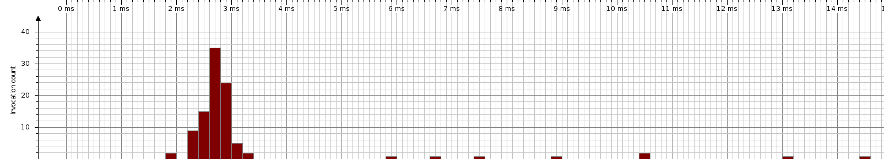

| Session: | Tarea2 |
| Time of export: | Monday, November 5, 2012 12:29:45 PM CLST |
| JVM time: | 01:43 |
| Method: | Kruskal. |
Total Time: | 334 ms | Invocations: | 100 | Average Time: | 3,348 µs | Median Time: | 2,850 µs | Minimum Time: | 1,958 µs | Maximum Time: | 14,426 µs | Standard Deviation: | 2,056 µs | Outlier Coefficient: | 4. |
|  |
| Call duration |